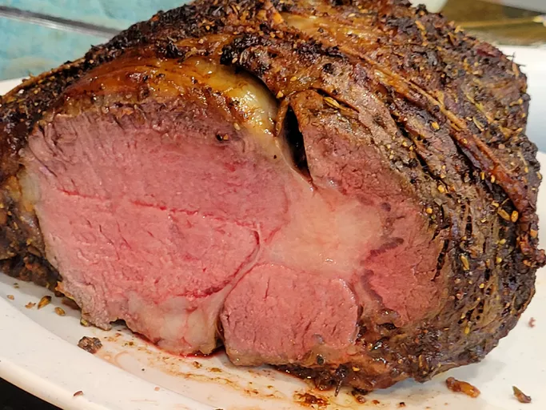

Home
Photo:

Description:
The original author describes this prime rib cooking method as his "mathematical method."
Which, I must say, I greatly appreciate. When you can apply math to cooking, things tend to turn
out tasty more often than not. That being said, it can be fun to let the creative juices flow and
make new recipes.
Ingredients:
- 1 (4 pound) bone-in prime rib roast (room temperature)
- 1/4 cup unsalted butter, softened
- 1 tablespoon freshly ground black pepper
- 1 teaspoon herbs de Provence
- kosher salt to taste
Directions:
- Gather the ingredients. Place prime rib roast on a plate
and bring to room temperature, 2 to 4 hours. Preheat the
oven to 500 degrees F (260 degrees C).
- Combine butter, pepper, and herbes de Provence in a bowl;
mix until well blended. Spread butter mixture evenly over
entire roast. Season roast generously with kosher salt.
- Roast the 4-pound roast in the preheated oven for 20 minutes.
(If your roast is larger or smaller than 4 pounds, multiply
the exact weight times 5 minutes.)
- Turn the oven off and, leaving the roast in the oven with
the door closed, let the roast sit in the oven for 2 hours.
- Remove roast from the oven, slice, and serve.